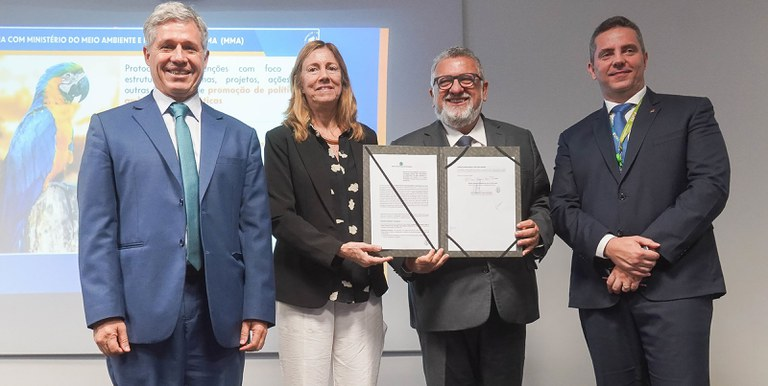
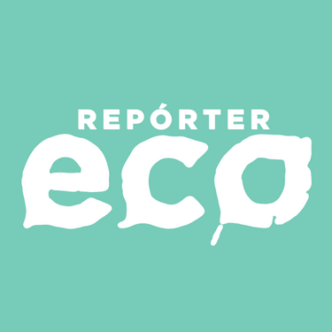

Notícias Cidade
Meio ambiente
MMA e Caixa formalizam parceria para impulsionar políticas ambientais e climáticas
Ampliação das estratégias de enfrentamento às mudanças climáticas e de combate ao desmatamento estão entre as ações previstas
Leia maisCultura
Exposição "Amazônias: O Futuro Ancestral

Uma exposição no Centro de Cultura Contemporânea de Barcelona destacou a ocupação humana e a transformação da Amazônia por comunidades indígenas há mais de 13.000 anos.
Leia maisMidia
Programa "Repórter Eco"
O "Repórter Eco" é um programa jornalístico semanal da TV Cultura dedicado a temas relacionados ao meio ambiente. Estreou em 1992 e é considerado uma referência na área, abordando pesquisas, projetos e ações sobre conservação, sustentabilidade e qualidade de vida.
Leia mais